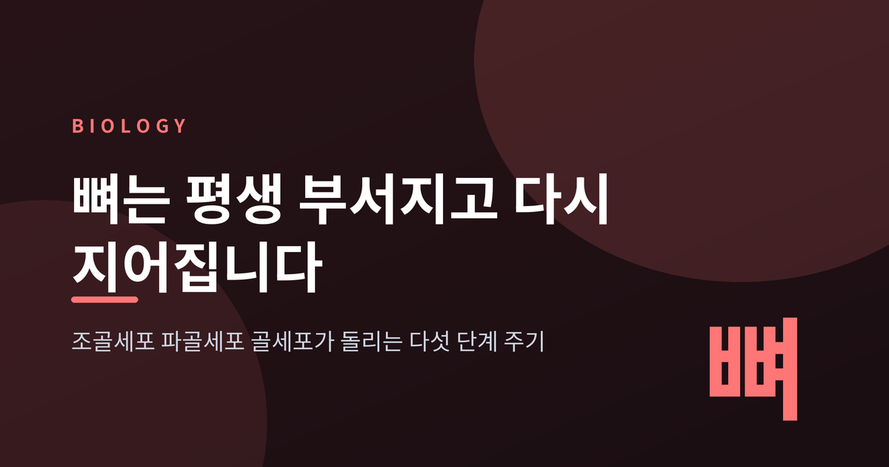
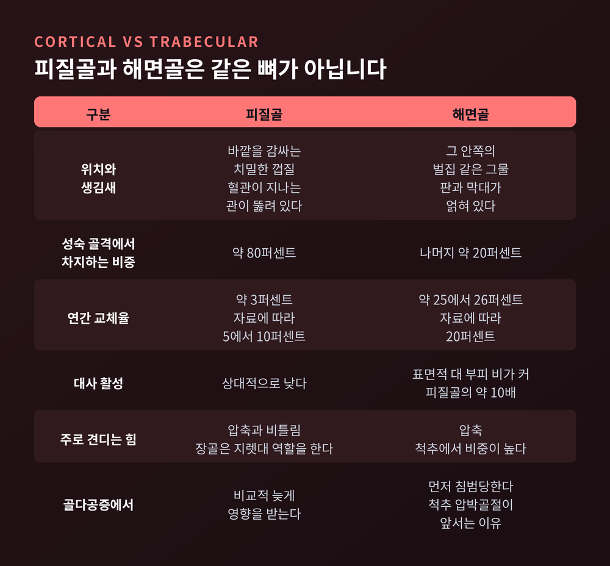
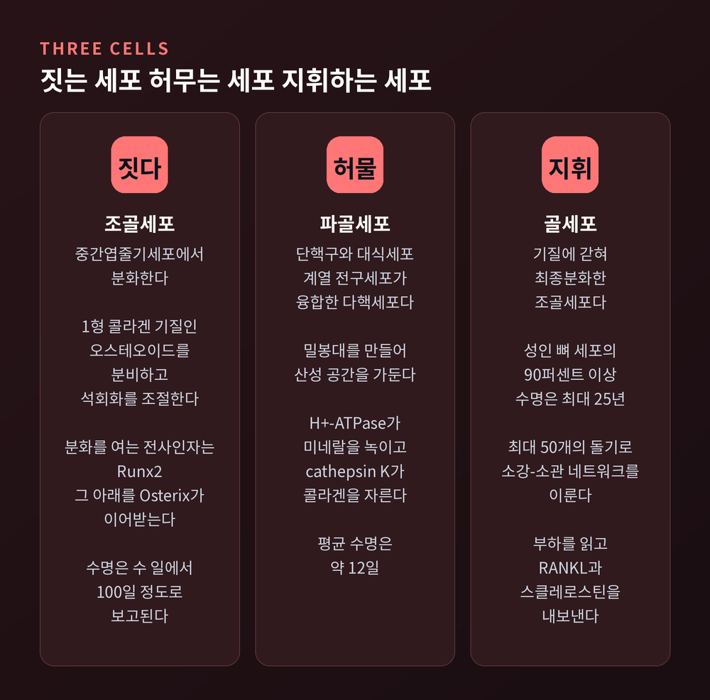
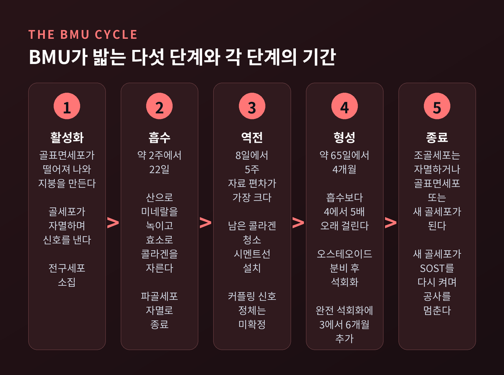
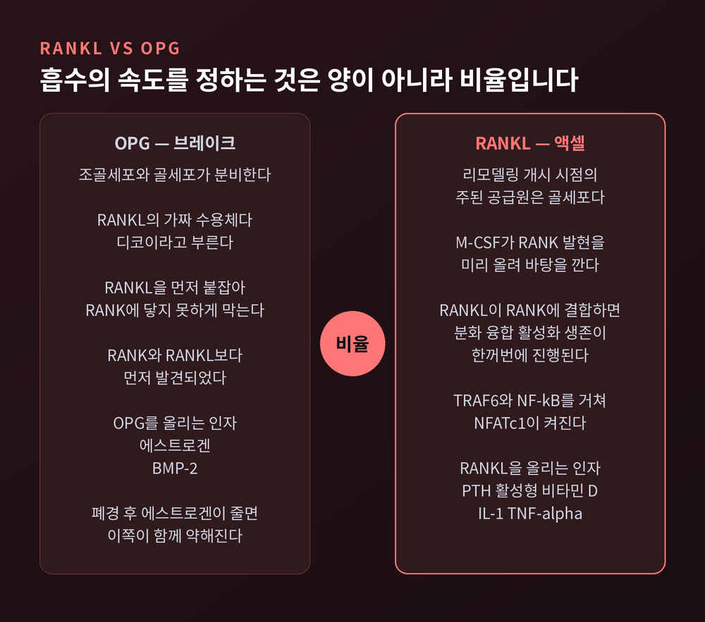
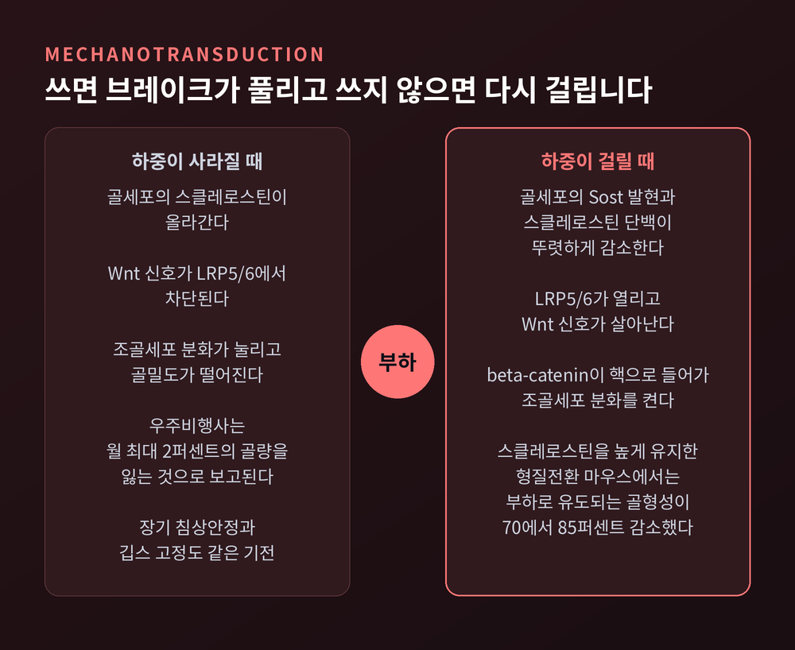
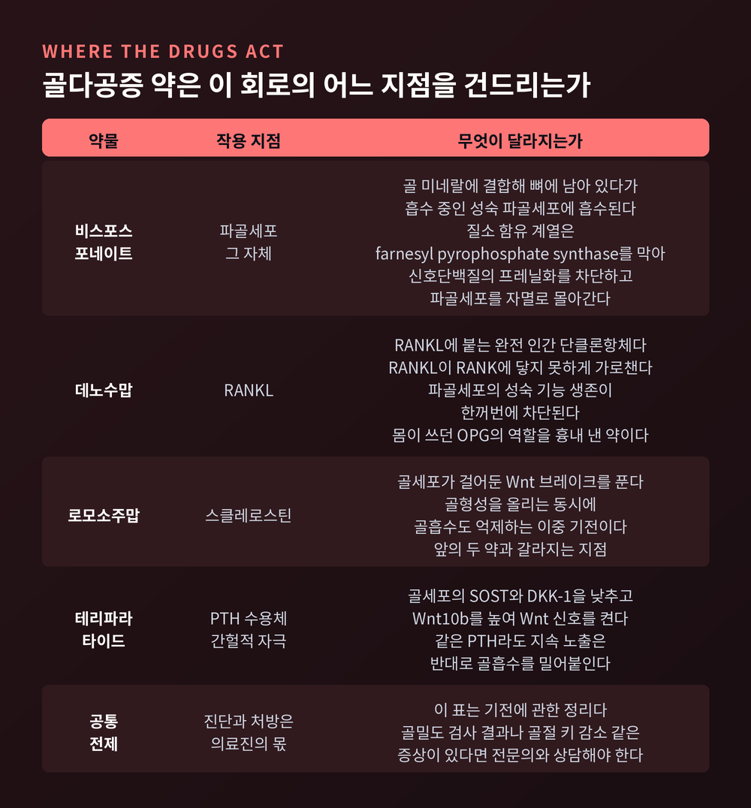

뼈 리모델링 원리 — 평생 부서지고 다시 지어지는 골격의 5단계
오늘은 뼈 리모델링에 대해 이야기해 보려 합니다. 뼈는 한 번 만들어지고 끝나는 구조물이 아니라, 지금 이 순간에도 곳곳에서 허물어지고 다시 세워지는 공사 현장입니다. 세 종류의 세포가 어떻게 일을 나누는지, 그 주기가 어떤 다섯 단계를 밟는지, 그리고 골다공증에서 그 균형이 어디서 무너지는지까지 순서대로 따라가 보겠습니다.

뼈는 완성된 구조물이 아닙니다
돌이나 시멘트를 떠올리면 오해가 생깁니다.
뼈는 두 가지 재료가 겹쳐진 복합체입니다. 1형 콜라겐이 풍부한 기질, 그리고 그 사이에 박힌 수산화인회석 결정 Ca10(PO4)6(OH)2입니다. 콜라겐은 탄성과 인장강도를 맡고, 수산화인회석은 강성과 압축강도를 맡습니다. 어느 한쪽만으로는 뼈가 되지 않습니다.
이 구조를 계속 갈아 끼우는 과정이 리모델링입니다. 목적은 두 가지입니다. 낡고 미세하게 금이 간 부분을 교체하는 것, 그리고 필요할 때 칼슘과 인을 빠르게 꺼내 쓸 통로를 확보하는 것입니다.
혼동하기 쉬운 개념이 하나 더 있습니다. 모델링입니다. 모델링에서는 흡수와 형성이 서로 다른 자리에서 따로 일어나 뼈의 크기와 모양 자체를 바꿉니다. 성장기에 주로 벌어지는 일입니다. 반면 리모델링은 흡수와 형성이 같은 자리에서 짝을 이뤄 진행됩니다. 모양은 그대로 두고 내용물만 교체하는 셈입니다.
성숙한 골격의 약 80퍼센트는 바깥의 단단한 피질골입니다. 나머지가 그 안쪽의 벌집 같은 해면골입니다. 해면골은 부피에 비해 표면적이 넓어 대사율이 피질골의 약 10배에 이릅니다. 미네랄이 급히 필요할 때 먼저 내놓는 쪽도, 골다공증이 먼저 침범하는 쪽도 해면골입니다.

짓는 세포, 허무는 세포, 지휘하는 세포
리모델링에는 세 종류의 세포가 등장합니다.
조골세포는 짓는 쪽입니다. 중간엽줄기세포에서 분화하며, 활성 상태에서는 골지체와 소포체가 크게 발달합니다. 오스테오이드라 부르는 콜라겐 기질을 빠르게 뽑아내기 위한 구조입니다. 분화를 여는 열쇠는 Runx2라는 전사인자이고, 그 아래에서 Osterix가 이어받습니다.
파골세포는 허무는 쪽입니다. 단핵구와 대식세포 계열의 전구세포들이 융합해 만들어진 다핵세포입니다. 뼈 표면에 달라붙어 밀봉대를 만들고, 그 안쪽에 격리된 산성 공간을 마련합니다. 그 다음은 두 단계입니다. 먼저 H+-ATPase가 수소이온을 퍼부어 미네랄을 녹이고, 이어서 cathepsin K 같은 단백분해효소가 콜라겐을 잘라냅니다.
골세포는 지휘하는 쪽입니다. 조골세포가 자기가 만든 기질 속에 갇혀 최종분화한 형태인데요, 성인 뼈 세포의 90퍼센트 이상을 차지합니다. 수명도 최대 25년까지 보고될 만큼 깁니다.
골세포의 모양이 인상적입니다. 별처럼 최대 50개의 돌기를 뻗어 소관을 따라 서로 연결됩니다. 이 그물을 골세포 소강-소관 네트워크라고 부릅니다. 뼈 속에 깔린 통신망인 셈입니다.
예전에는 골세포를 그저 기질에 갇혀 활동을 멈춘 세포로 보았습니다. 지금은 정반대로 봅니다. 부하를 읽고, 파골세포를 부르는 RANKL을 내놓고, 조골세포를 멈춰 세우는 스클레로스틴을 분비하는 사령탑입니다.

BMU가 밟는 다섯 단계
리모델링은 아무 데서나 흩어져 일어나지 않습니다. BMU라는 일시적 조직 단위 안에서 진행됩니다.
BMU는 기본다세포단위의 약자로, 파골세포와 조골세포 그리고 모세혈관 공급이 한 세트로 묶인 구조입니다. 흥미로운 점은 BMU가 그 안의 세포 개개보다 오래 산다는 것입니다. 파골세포의 평균 수명은 약 12일, 조골세포도 수 일에서 100일 정도로 보고됩니다. 그러니 공사가 끝날 때까지 세포를 계속 새로 불러들여야 합니다. 그 보충을 통제하는 것이 골세포입니다.
BMU의 생김새는 위치에 따라 다릅니다. 해면골에서는 표면에 참호를 파듯 하우쉽 소와를 만들고 그 자리를 다시 메웁니다. 피질골에서는 파골세포가 절삭원추를 이뤄 터널을 뚫고 들어갑니다. 그 뒤를 조골세포가 따라가며 터널 벽에 동심원으로 새 뼈를 깔고, 가운데에 혈관이 지나는 하버스관을 남깁니다. 이렇게 만들어진 것이 새 골단위입니다.
주기는 다섯 단계로 정리됩니다. 활성화, 흡수, 역전, 형성, 종료입니다. 전체 소요 기간은 약 120일에서 200일로 보고됩니다.
활성화에서는 골표면세포가 뼈에서 떨어져 나와 지붕을 만들고 표면을 노출시킵니다. 이때 신호를 보내는 것은 대개 골세포입니다. 미세손상으로 골세포의 소관이 끊기면 그 세포가 자멸하고, 거기서 나온 인자가 혈관신생과 전구세포 소집을 유도합니다. 손상된 자리를 정확히 겨냥하는 표적형 리모델링입니다. 반면 PTH 같은 전신 호르몬 변화에 반응하는 비표적형도 있습니다. 이쪽은 부위를 가리지 않고 칼슘 창고를 여는 것이 목적입니다.
흡수기는 자료에 따라 약 2주에서 22일로 기술됩니다. 흥미롭게도 이 단계는 파골세포의 예정된 세포자멸사로 끝납니다. 과도하게 파내지 않도록 걸어둔 안전장치입니다.
역전기는 가장 덜 규명된 구간입니다. 기간부터 자료 간 편차가 커서 8일로 보는 쪽과 4주에서 5주로 보는 쪽이 갈립니다. 이 사이에 남은 콜라겐이 청소되고, 조골세포가 잘 붙도록 시멘트선이 깔립니다. 흡수와 형성을 잇는 커플링 신호도 이때 오가는데, 정확한 정체는 아직 확정되지 않았습니다. Ephrin 수용체 쌍, IL-6, 그리고 기질에서 풀려나오는 TGF-β와 IGF가 후보로 거론됩니다.
형성기가 가장 깁니다. 약 65일로 보는 자료도 있고 약 4개월로 보는 자료도 있지만, 양쪽이 일치하는 사실이 하나 있습니다. 형성은 흡수보다 4배에서 5배 오래 걸립니다. 게다가 완전한 석회화까지는 다시 3개월에서 6개월이 더 필요합니다.
허무는 데는 2주, 다시 채우는 데는 넉 달입니다. 이 비대칭이 뒤에서 다시 중요해집니다.
종료기에는 조골세포가 세 갈래로 갈립니다. 자멸하거나, 골표면세포가 되거나, 기질에 갇혀 새 골세포가 됩니다. 그리고 그 새 골세포가 다시 브레이크를 걸면서 공사가 마무리됩니다.

흡수의 액셀과 브레이크, RANKL과 OPG
파골세포를 부르는 신호는 1990년대에 밝혀졌습니다. RANKL, RANK, OPG로 이뤄진 축입니다.
순서는 이렇습니다. 먼저 M-CSF가 전구세포의 RANK 발현을 올려 바탕을 깔아둡니다. 그 위에 RANKL이 RANK에 결합하면 분화와 융합, 활성화와 생존이 한꺼번에 진행됩니다. 하류에서는 TRAF6와 NF-κB를 거쳐 NFATc1이라는 전사인자가 켜집니다.
OPG는 반대편입니다. RANKL의 가짜 수용체, 즉 디코이입니다. 조골세포와 골세포가 분비하며, RANKL을 먼저 붙잡아 RANK에 닿지 못하게 막습니다.
그래서 흡수 속도를 정하는 것은 RANKL의 절대량이 아닙니다. RANKL과 OPG의 비율입니다. 전신 인자들이 바로 이 비율을 흔듭니다. 에스트로겐과 BMP-2는 OPG를 올리고, PTH와 1,25(OH)2 비타민 D3, IL-1과 TNF-α는 RANKL을 올립니다.
그리고 리모델링 개시 시점에 RANKL을 내놓는 주된 주체가 기질 속 골세포라는 점이 최근 합의에 가깝습니다.

뼈는 어떻게 자기가 받는 힘을 읽는가
1892년 독일의 해부학자 율리우스 볼프는 하나의 관찰을 법칙으로 정리했습니다. 뼈는 가해지는 하중에 맞춰 스스로를 바꾼다는 것입니다.
하중이 늘면 그것을 견디도록 리모델링되어 강해지고, 하중이 사라지면 자극이 없어 밀도가 떨어집니다. 오늘날에는 골 기능적 적응이라는 이름으로 불립니다.
100년 가까이 이 법칙에는 빠진 고리가 있었습니다. 뼈가 힘을 읽는다는 것은 알겠는데, 무엇이 읽고 무엇으로 전달하는지가 비어 있었습니다. 그 자리를 채운 것이 골세포와 스클레로스틴입니다.
스클레로스틴은 SOST 유전자가 만드는 단백질로, 사실상 골세포에서만 발견됩니다. 하는 일은 Wnt 신호를 막는 것입니다. Wnt는 Frizzled 수용체와 공수용체 LRP5/6에 결합해 β-catenin을 축적시키고, 이것이 핵으로 들어가 조골세포 분화 유전자를 켭니다. 스클레로스틴은 LRP5/6에 달라붙어 이 과정을 차단합니다. 골형성의 브레이크인 셈입니다.
이 사실은 두 희귀질환이 알려주었습니다. SOST 기능상실 변이를 가진 경화성골이형성증과 판 부헴병 환자는 뼈가 비정상적으로 두꺼워집니다. 반대로 LRP5 기능상실 변이를 가진 골다공증-가성신경교종 증후군 환자는 뼈가 얇습니다.
여기에 기계적 자극이 연결됩니다. 뼈에 부하를 주면 골세포의 Sost 발현과 스클레로스틴 단백이 뚜렷하게 감소합니다. 반대로 하중이 사라지면 스클레로스틴이 올라갑니다. 스클레로스틴을 인위적으로 높게 유지한 형질전환 마우스에서는 부하로 유도되는 골형성이 70에서 85퍼센트까지 줄었습니다. 브레이크를 푸는 이 단계가 선택이 아니라 필수라는 뜻입니다.
"운동이 뼈에 좋다"는 말의 분자 수준 번역이 바로 이것입니다. 걷고 뛰는 동안 골세포가 브레이크에서 발을 뗍니다.
거꾸로도 성립합니다. 우주비행사는 우주에서 월 최대 2퍼센트의 골량을 잃는 것으로 보고됩니다. 장기 침상안정이나 깁스 고정도 같은 기전으로 묶입니다.
다만 한계는 분명히 해 두겠습니다. 어느 정도의 변형이 어느 방향의 반응을 부르는지에 대한 역치는 아직 추정치 수준입니다. 프로스트의 기계항상기 모형은 대략 1,500에서 3,000 마이크로스트레인 이상에서 골형성이, 100에서 300 마이크로스트레인 아래에서 골흡수가 우세해진다고 보지만, 부위와 조건에 따라 편차가 큽니다.

골격은 몸에서 가장 큰 칼슘 창고입니다
리모델링의 두 번째 목적을 살펴볼 차례입니다.
체내 칼슘의 약 99퍼센트가 골격에 저장되어 있습니다. 70킬로그램 성인 기준으로 대략 1킬로그램입니다. 그런데 혈액이 요구하는 범위는 놀랄 만큼 좁습니다. 총 혈청 칼슘의 정상 범위는 8.5에서 10.5 mg/dL이고, 그중 절반쯤이 실제로 일하는 이온화 칼슘입니다.
이 좁은 범위를 지키기 위해 세 호르몬이 움직입니다.
PTH는 부갑상선에서 나옵니다. 신세뇨관에서 칼슘 재흡수를 늘리고, 비타민 D 활성화를 촉진하며, 뼈에서는 골세포와 조골세포를 통해 RANKL을 올리고 OPG를 낮춰 흡수를 밀어붙입니다.
여기서 한 가지를 짚고 싶습니다. PTH는 노출 양상에 따라 정반대로 작동합니다. 계속 높게 유지되면 뼈를 허뭅니다. 원발성 부갑상선기능항진증에서 골소실이 오는 이유입니다. 그런데 하루 한 번처럼 간헐적으로 자극하면 오히려 골형성을 올립니다. 골세포의 SOST와 DKK-1을 낮추고 Wnt10b를 높여 Wnt 신호를 켜기 때문입니다. 골다공증 치료제 테리파라타이드가 여기에 기댑니다.
비타민 D의 주된 무대는 뼈가 아니라 장입니다. 칼슘과 인의 흡수를 늘려 석회화에 쓸 재료를 공급합니다. 뼈세포에도 수용체가 있지만, 직접 작용의 크기는 아직 논의 중입니다.
칼시토닌은 갑상선의 소포곁세포에서 나와 파골세포를 억제합니다. 교과서에서는 PTH의 짝으로 소개되지만, 실제 비중은 훨씬 작습니다. 여러 자료가 칼시토닌의 생리적 역할이 불확실하며 혈청 칼슘에 큰 영향을 주지 않는 것으로 보인다고 적고 있습니다. 약리학적 농도에서만 흡수 억제가 뚜렷합니다.
10년이면 골격이 통째로 갈립니다
성인 골격은 매년 대략 5에서 10퍼센트가 교체됩니다. 이 속도라면 약 10년이면 골격 전체가 한 번 갈리는 계산이 나옵니다.
다만 이 숫자는 평균값이고 부위별 편차가 큽니다. 해면골은 연 25에서 26퍼센트가 교체되는 반면, 피질골은 연 3퍼센트 안팎으로 보고됩니다. 자료에 따라 피질골을 5에서 10퍼센트로 잡기도 합니다.
그러니 "10년마다 새 뼈"는 어림값으로 받아들이시는 편이 정확합니다. 척추의 해면골은 훨씬 빨리 갈리고, 대퇴골 몸통의 피질골은 훨씬 느리게 갈립니다.
균형이 깨지는 지점
골다공증의 진단 기준은 명확합니다. DXA로 측정한 T값이 -2.5 이하면 골다공증, -1.0에서 -2.5 사이면 골감소증입니다. T값은 같은 성별의 젊은 건강한 성인 평균과 비교한 표준편차입니다.
기전은 한 문장으로 요약됩니다. 흡수가 형성을 지속적으로 앞지르는 것입니다.
폐경 후 골다공증이 대표적입니다. 에스트로겐이 급감하면 그동안 에스트로겐이 떠받치던 OPG 생산이 줄고 RANKL은 늘어납니다. 앞서 본 비율이 흡수 쪽으로 기울어집니다. 여기에 IL-1과 IL-6, TNF-α 같은 전염증성 사이토카인이 올라가 파골세포 생성을 한 번 더 밀어줍니다. Wnt 신호 억제도 겹칩니다.
그 결과가 고회전 골소실입니다. 리모델링이 더 자주, 더 깊이 일어납니다.
앞에서 본 비대칭이 여기서 문제가 됩니다. 흡수는 2주에 끝나지만 형성은 넉 달이 걸립니다. 회전율이 올라가면 파였는데 아직 메워지지 않은 자리가 동시에 늘어납니다. 골량 수치로 드러나기 전에 구조가 먼저 약해지는 이유입니다.
약은 이 회로의 어느 지점을 건드리는가
앞의 회로를 이해하면 약의 작용 지점이 자연스럽게 보입니다.
비스포스포네이트는 골 미네랄에 결합해 뼈에 붙어 있다가, 흡수 중인 성숙 파골세포에 흡수됩니다. 질소를 포함한 계열은 farnesyl pyrophosphate synthase를 억제해 세포내 신호단백질의 프레닐화를 막고, 결국 파골세포를 자멸로 몰아갑니다. 표적은 파골세포 자체입니다.
데노수맙은 한 칸 앞을 막습니다. RANKL에 붙는 완전 인간 단클론항체로, RANKL이 RANK에 닿지 못하게 가로챕니다. 파골세포의 성숙과 기능, 생존이 한꺼번에 차단됩니다. 몸이 원래 쓰던 OPG의 역할을 약으로 흉내 낸 셈입니다.
두 약은 목적지가 같지만 가는 길이 다릅니다. 비스포스포네이트는 광물에 붙어 뼈에 남고, 데노수맙은 순환하는 항체로 작용합니다. 이 차이는 투약을 멈춘 뒤의 거동 차이로 이어집니다.
로모소주맙은 아예 다른 쪽 손잡이를 잡습니다. 스클레로스틴에 대한 단클론항체입니다. 골세포가 걸어둔 Wnt 브레이크를 풀어 골형성을 올리면서, 동시에 골흡수도 억제합니다. 형성과 흡수 양쪽을 함께 움직이는 이 이중 기전이 앞의 두 약과 갈라지는 지점입니다.
여기까지는 기전에 관한 설명입니다. 이 글은 진단이나 처방을 대신하지 않습니다. 골밀도 검사 결과나 골절, 키 감소 같은 증상이 있으시다면 반드시 전문의와 상담하시길 권합니다.

끝으로 한 마디만 더 드리겠습니다.
뼈가 단단한 이유는 변하지 않아서가 아닙니다. 쉬지 않고 교체되기 때문입니다. 낡은 자리를 찾아 파내고, 넉 달에 걸쳐 다시 채우는 일이 몸 전체에서 동시에 진행됩니다. 골세포는 그 사이에서 힘을 읽고 브레이크를 걸었다 풀었다 합니다.
그래서 뼈는 기록이기도 합니다. 어떻게 움직였는지가 그대로 남습니다.
지금 서 있든 앉아 있든, 골격 어딘가에서는 오늘의 하중이 조용히 읽히는 중입니다.